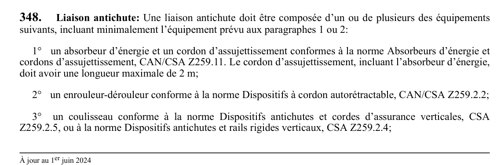

art-348-RSST : liaison antichute
Un article du wiki ⚖️ Recueil législatif
En bref
Liaison antichute: Une liaison antichute doit être composée d'un ou de plusieurs des équipements suivants, incluant minimalement l'équipement prévu aux paragraphes 1 ou 2: 1° un absorbeur d'énergie et un cordon d'assujettissement conformes à la norme Absorbeurs d'énergie et cordons d'assujettissement, CAN/CSA Z259.11.
🌐 LegisQuébec · 📄 PDF officiel
Texte officiel : capture du PDF

Toucher l'image pour l'agrandir🔗 Voir art. 348 RSST dans le PDF (page 121) · texte à jour au 1er juin 2024
📚 Source légale : D. 885-2001, a. 348; D. 1411-2018, a. 28. · LégisQuébec
Voir aussi
Pages qui pointent ici (3)
- art-347-RSST : harnais de sécurité Recueil législatif
- art-349-RSST : fixation à un système d'ancrage Recueil législatif
- RSST : Section 30 : Moyens et équipements de protection individuels ou collectifs Recueil législatif